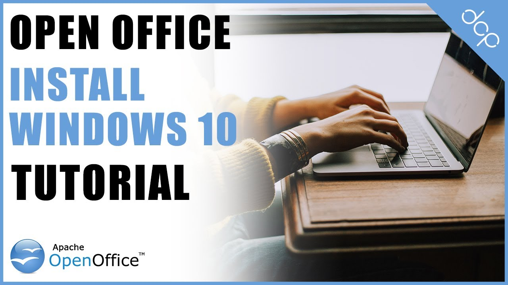

Razlaga postopka s pomočjo zaslonskega zajema je kratek videoposnetek, ki posameznika vodi skozi ali nauči nek točno določeni postopek. Z razlago postopka se pogosto srečujemo na internetu, če iščemo navodila kako uporabiti neko funkcijo na računalniku itd. Po tem vzoru lahko nosilec izobraževanja svoje učence z video posnetkom zaslona vodi skozi postopek nastavitve računalniškega okolja, ki ga bodo potrebovali za opravljanje izobraževanja.
Prav tako lahko za razlago postopka uporabimo galerijo zaslonskih slik, ki jih ustrezno opremimo s kazalkami in razlago (npr. vključimo jih v članek).
Slika 1: Razlaga postopka namestitve programa

Vir: youtube.com. How to install open office on Windows 10 Tutorial. Pridobljeno s https://www.youtube.com/watch?v=CrM09dDxFCU, dne 21.1.2021